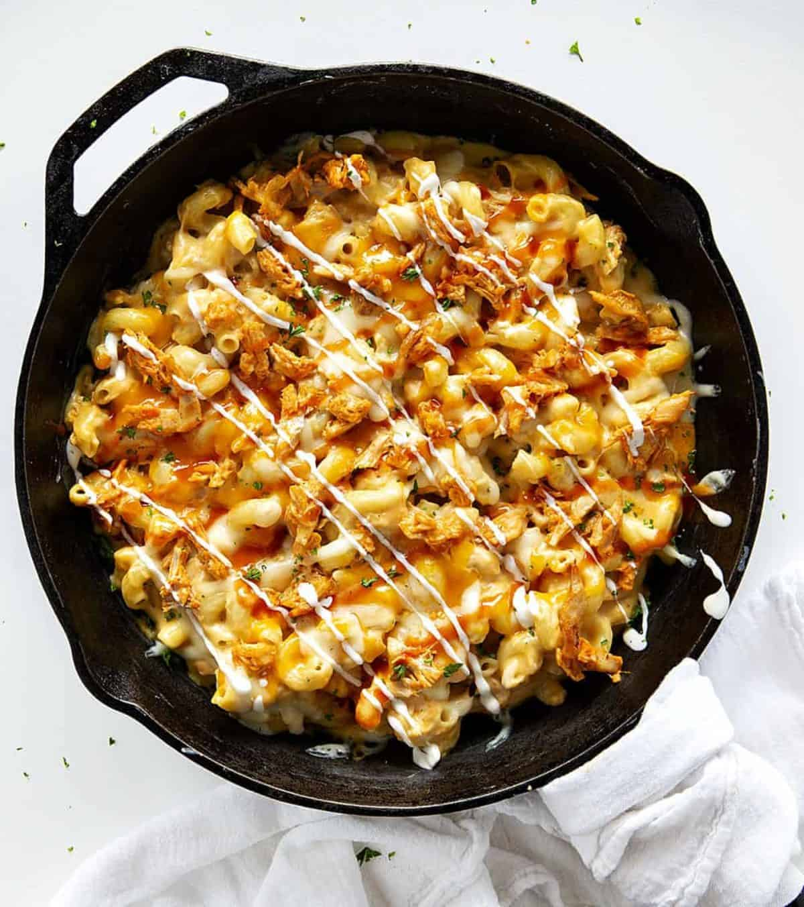

Buffalo Mac & Cheese

Description
There are three main parts to the Buffalo Chicken Macaroni and Cheese Recipe. You need to prepare the chicken, make the macaroni and cheese, and add the topping. I am a huge fan of rotisserie chicken, but sometimes I don’t want to shred it myself. I may be the last person to find out that rotisserie chicken is sometimes prepared, already shredded, in the deli! Bonus! Be sure to buy buffalo sauce, not simply hot sauce for this recipe. If you want to make your own buffalo sauce, I have the perfect recipe for you! The nice thing about my Buffalo Sauce is it can be made a little hotter or not as hot, depending on your tolerance. I used ranch dressing for this recipe, and I just happen to have a homemade ranch dressing recipe you could try! Although I used ranch dressing with this recipe, blue cheese dressing is another dressing that pairs well with buffalo sauce.
Ingredients
- 1 cup (140 g) shredded cooked rotisserie chicken
- 2 tablespoons buffalo sauce
- 2 tablespoons ranch dressing
- 8 ounces cavatappi noodles, cooked al dente and drained
- ¼ cup (½ stick / 57 g) unsalted butter
- ¼ cup (31 g) all-purpose flour
- 2 cups (490) whole milk, warmed
- ½ teaspoon kosher salt
- ¼ teaspoon ground mustard powder
- ⅛ teaspoon garlic powder
- ½ cup (56.5 g) sharp cheddar cheese, freshly grated
- ¼ cup (28 g) mozzarella cheese, freshly grated
Steps
- Put the peeled garlic, ginger, onion, chili, cilantro and curry powder into a food processor or blender. (Read how to peel ginger easily.)
- Then pulse the ingredients several times to reach a coarse consistency, and you can always add a few spoonfuls of water if needed to bring it together.
- Next, skin the chicken drumsticks. I find it easiest to grab hold of the skin with a piece of paper towel to grip, and and then peel (rip) it off.
- Then to achieve the authentic Trini style, chop the top inch of bone off with a meat cleaver. Of course, you can always ask your meat counter to do all this ahead of time.
- Rub the chicken pieces all over with the curry paste (use rubber gloves if you don’t want your hands to become spicy) and let it sit for 10-15 minutes to marinate.
- Place a medium pot or a large skillet over medium-high heat. When hot, add the oil and the chicken pieces to fry for a few minutes.
- Then add the broth or water and bring to a boil. Cover partially and simmer for 30 minutes.